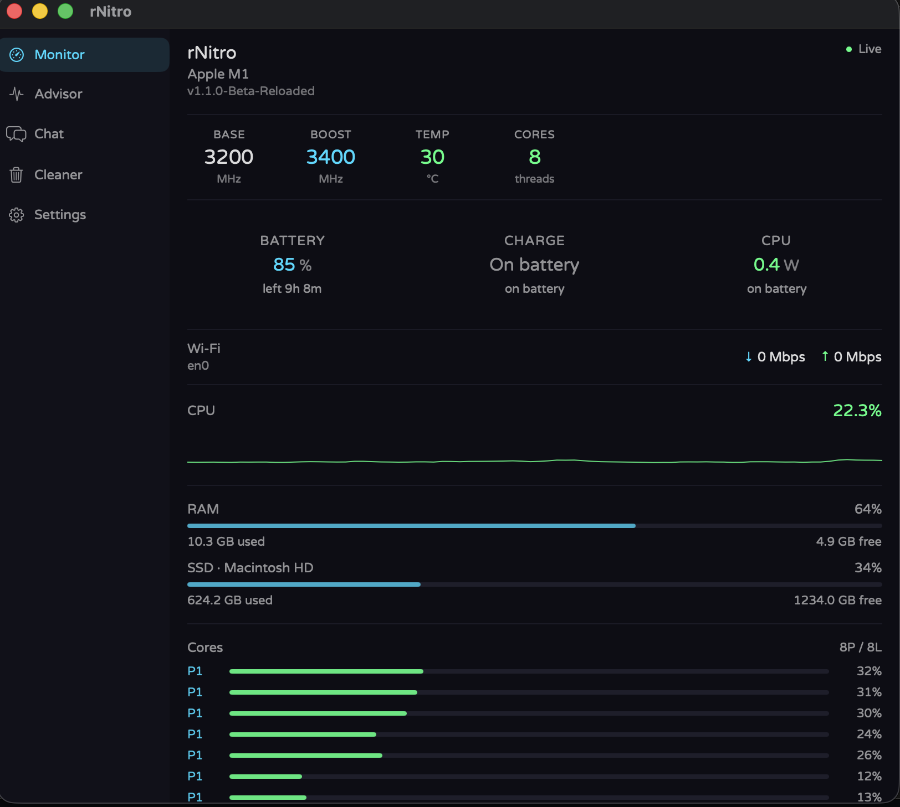
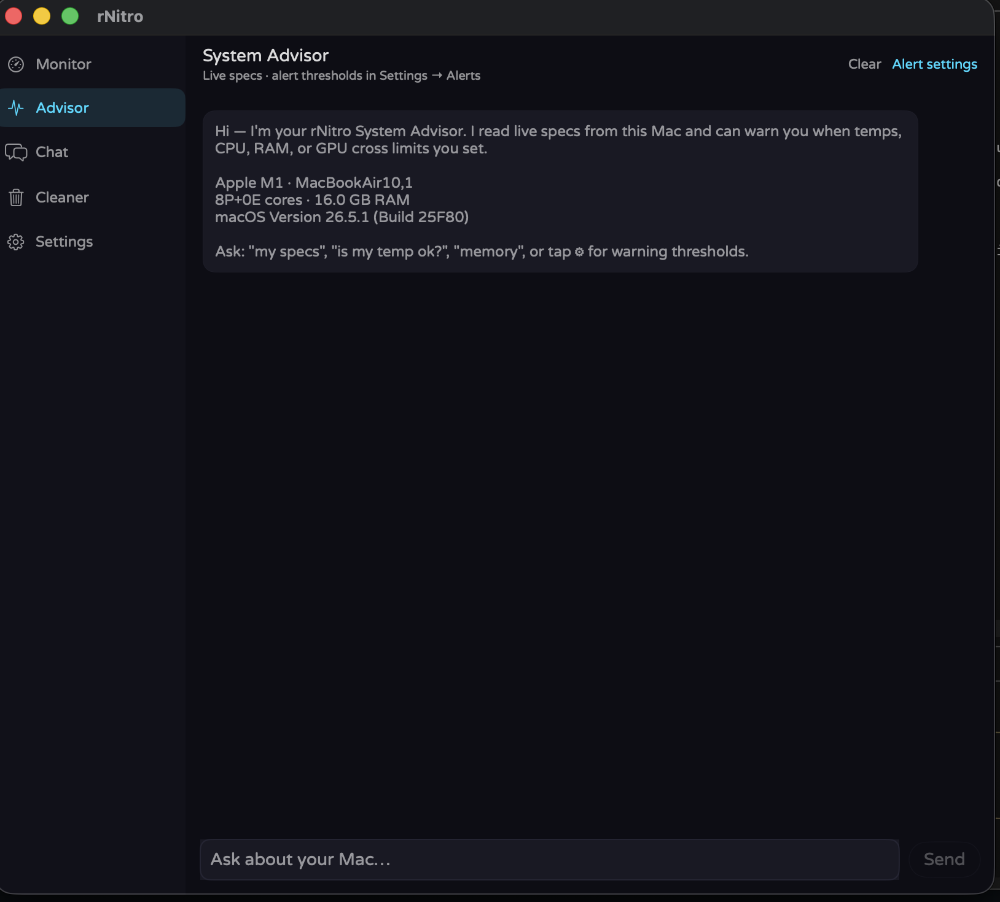
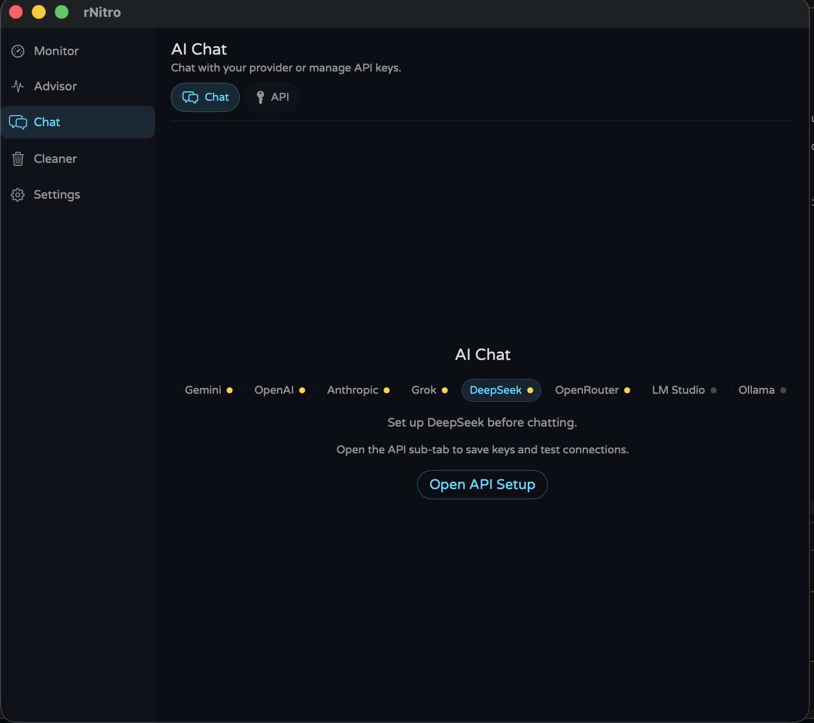
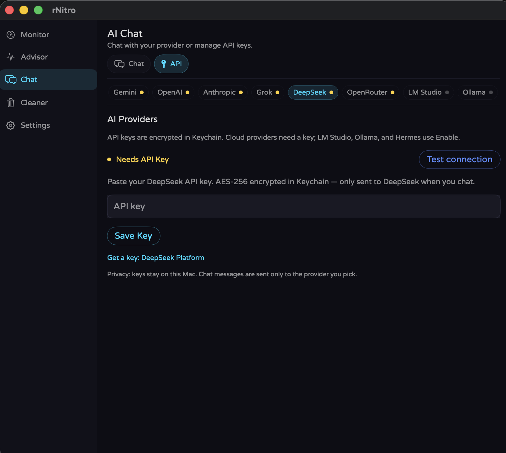
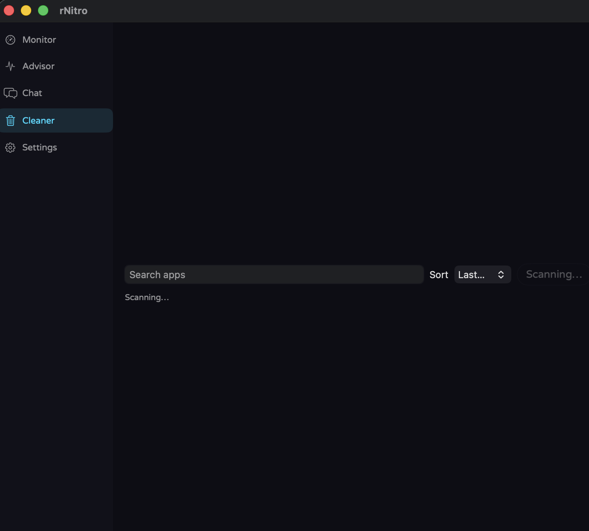
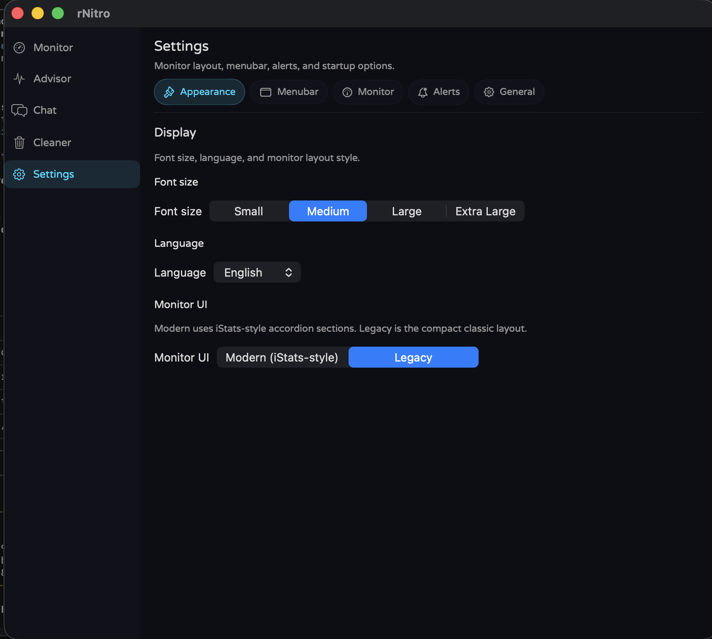

Menu bar · Apple Silicon · macOS 12+
Made by chopsticks
Real-time CPU, temperature, memory, battery, and more — right in your Mac menu bar. v1.1.0 Final Reloaded for daily use · v1.2.1 Beta for every AI provider. Intel Macs not supported. Free · no account · no telemetry.
Paste in Terminal — compiles on your Mac (~30s). Usually does not trigger Gatekeeper like ZIP, PKG, or DMG. Requires Xcode Command Line Tools.
Unzip → drag rNitro.app to Applications → right-click Open once if macOS blocks it. No admin password needed.
Beta notice: Experimental AI features — report issues via Support. You must agree to Terms & Conditions before download.
Paste in Terminal — compiles on your Mac (~30s). Usually does not trigger Gatekeeper like ZIP, PKG, or DMG. Requires Xcode Command Line Tools.
Unzip → drag rNitro.app to Applications → right-click Open once if macOS blocks it. No admin password needed.
Paste one line into Terminal — downloads the installer, then compiles and installs rNitro (~30s). Best first launch: usually avoids Gatekeeper blocks from ZIP/PKG/DMG. Requires Xcode Command Line Tools.
New on Mac? Use the green Recommended Download (App ZIP) — unzip, drag to Applications, right-click → Open once. Same builds on GitHub Releases (v1.1.0-Final-Reloaded · v1.2.1). Apple Silicon only.
macOS · Apple Silicon · Menu bar
Menu bar monitor with Advisor, Chat, Chat Config, App cleaner, and Settings — built for macOS 12+ on Apple Silicon.






Latest stable and beta highlights.
Nothing to do with rNitro — just a place to hang out and play. Add the server in Minecraft Java Edition and jump in.
One place to see what each build is, where it installs, and how updates work. New here? macOS Stable App ZIP for daily monitoring, or macOS Beta App ZIP if you want every AI provider.
| Platform | Version | Status | Recommended download | Install location | Updates | What you get |
|---|---|---|---|---|---|---|
| macOS · Stable | v1.1.0-Final-Reloaded | Active | rNitro-v1.1.0-Final-Reloaded.zip | ~/Applications/rNitro.app | In-app updater on launch | CPU monitor, benchmark, stress test, System Advisor, App Cleaner; AI chat: OpenAI + OpenRouter only |
| macOS · Beta | v1.2.1 | Experimental | rNitro-v1.2.1.zip | ~/Applications/rNitro.app | In-app updater on launch | Everything in Stable plus all AI providers, temp banners, AES-256 key storage, first-launch tips |
| CLI · Terminal | v0.2-cli | New | rNitro-CLI.tar.gz | ~/bin/rnitro or /usr/local/bin/rnitro | Manual — re-download tarball or curl one-liner | btop-style TUI: CPU, RAM, disk, network, battery, top processes; macOS + Linux; Python 3 |
| Linux · Pre-release | v0.1-Linux-Beta-Pre-release-x64 | Pre-release | rNitro-v0.1-Linux-Beta-Pre-release-x64.tar.gz or install-rNitro-linux.sh | ~/.local/share/rnitro | Checks version.json on launch | GTK4 app: Monitor, Advisor, Chat, Cleaner; x86_64; needs Python 3.10+, GTK 4, libadwaita |
| Windows · Legacy | v4.2.4-Windows-Final-x86 | Deprecated | rNitro-v4.2.4-Windows-Final-x86.exe | %LOCALAPPDATA%\rNitro | Manual — check website or GitHub | Tray monitor only (CPU, temp, RAM, BTC); no AI chat or Cleaner; .NET 8 runtime for EXE |
| Format | Platform | What it is | Gatekeeper / runtime | When to use |
|---|---|---|---|---|
| App ZIP (recommended) | macOS | Pre-built rNitro.app — unzip and drag to Applications | Right-click → Open once if Gatekeeper blocks it | Fastest path; no admin password |
| PKG | macOS | Installer package → Applications | System Settings → Privacy & Security → Open if blocked | One double-click install; needs admin password |
| DMG | macOS | Disk image — drag app to Applications | Same as App ZIP on first open | Familiar Mac workflow |
| .sh shell installer | macOS | Full Swift source compiled locally with swiftc | No prebuilt binary downloaded — you read the script first | Maximum trust; ~30s compile on your Mac |
| Tarball + .sh | Linux | Python/GTK source tree + install-rNitro-linux.sh | Installer checks deps and sets up a venv | Pre-release; also on GitHub |
| EXE / .ps1 | Windows | Pre-built tray app or PowerShell compile via csc.exe | .NET 8 Desktop Runtime for EXE | Legacy only — macOS or Linux recommended for new installs |
| Step | What happens |
|---|---|
| Pick your platform tab | macOS, Linux, or Windows — the site auto-detects your OS |
| Accept Terms & Conditions | Required once per browser session before any download |
| Download recommended file | Green/orange/cyan/gold cards on each tab — sizes shown on buttons |
| Install | Follow the How to install steps below for your tab |
| Updates | macOS: in-app prompt → download ZIP → replace app. Linux: checks same version.json. Windows: manual. |
| GitHub mirror | All current builds also on GitHub Releases |
Choose Stable (green, OpenAI + OpenRouter) or Beta (orange, all AI APIs). Agree to the Terms & Conditions, then pick a format:
rNitro.app to Applications..app bundles.⚠ macOS security prompt: When you open the PKG, macOS may say it can't verify the file. That's normal for indie apps. Don't click Move to Trash. Click Done, then go to System Settings → Privacy & Security and press Open at the bottom.
No browser download needed — paste a one-liner in Terminal. It fetches the .sh installer (readable source), saves it to /tmp, then runs it. Stable:
Paste in Terminal (Apple Silicon Mac, Xcode CLT required). The script is saved to disk first — curl | bash is blocked on purpose.
Beta (v1.2.1):
Installs to ~/Applications/rNitro.app in ~30 seconds. Self-verifies its SHA-256 checksum before running.
If macOS blocks the app, right-click rNitro.app → Open once. No telemetry, no account — runs fully local.
New here? Start with the green Recommended Download (App ZIP). v1.1.0 Final Reloaded is production-ready; v1.2.1 Beta adds every AI provider. See the Linux and Windows pages for other platforms.
| v1.1.0 Final Reloaded | v1.2.1 Beta | |
|---|---|---|
| Best for | Daily CPU monitoring | Power users + AI chat |
| Settings | Subtabs: AI, Appearance, Menubar, Monitor, Alerts, General | Same subtabs + beta-only panel/weather options |
| AI chat | OpenAI + OpenRouter only | Gemini, OpenAI, Anthropic, Grok, DeepSeek, OpenRouter, LM Studio, Ollama, Hermes |
| System Advisor | Yes | Yes |
| Temp notification banners | No | Yes (optional) |
| AES-256 key storage | No | Yes (GCM + Keychain) |
| First-launch tips | No | Yes |
| Low Power Mode badge | Yes | Yes |
| Risk level | Production-ready | Experimental — Terms required |
| Recommended file | App ZIP (green card) | App ZIP (orange card) |
Unzip → drag rNitro.app to Applications → right-click Open once if macOS blocks it. No admin password needed.
Unzip → drag rNitro.app to Applications → right-click Open once if macOS blocks it. No admin password needed.
Need an older build? Shell installers for v8.3.9–v8.3.11 are in Other download options above. All hosted DMG disk images (current + archive) are on rNitro Archives — v1.1.0 Final, v1.2.1 Beta, and older releases.
Send a message and your default mail app will open with the details pre-filled, addressed to our support inbox.